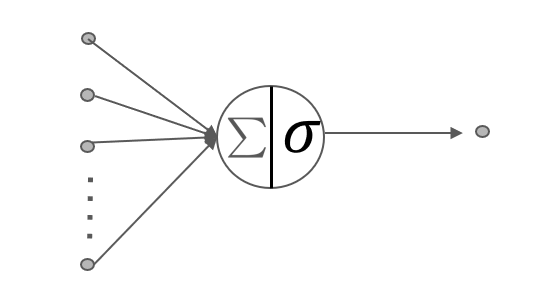
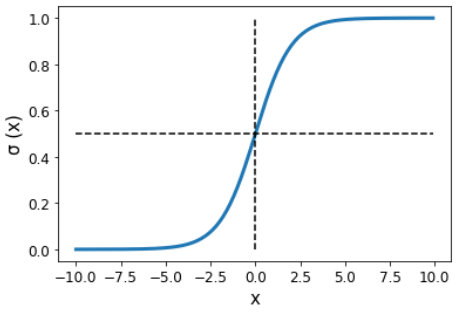

在上一节的手写数字识别入门中我们使用了多层感知机来识别手写数字图片，实现了不错的分类效果，MLP在深度学习中经常被使用，在这一节中，笔者将介绍什么是MLP。 MLP是多层感知器（Multi-Layer Perceptron）的缩写，是一种基于前馈神经网络（Feedforward Neural Network）的机器学习模型。它通常由多个全连接层组成，每个全连接层都包含多个神经元，每个神经元都与前一层的所有神经元相连，并通过激活函数对输入进行非线性变换。
神经元
首先让我们观察一下一个单独的神经元，如下图所示

其中 是 图片展平后的1维向量中的第 i 个点，我们假设这个1维的向量的长度为m。 是神经元对感知到的第 i 个点的权重；b 表示该神经元的偏置。 和 b 表示该神经元的参数，这些参数的值的大小由反向传播更新获取。 表示该神经元的激活函数。
激活函数
激活函数有很多种，常见的有Sigmoid、ReLU、ELU、GELU等。这里我们介绍Sigmoid激活函数，这个激活函数在上一节 手写数字识别入门 中用到了。公式（2）是Sigmoid激活函数的数学表达式，用来激神经元，也就是把神经元的线性输出转变为非线性。 Sigmoid函数图像如下图

MLP模型解析
在手写数字识别入门中我们利用python程序成功地让MLP获得了识别手写数字的能力，并达到了95.46%的准确率。那时我们先把28x28的图片展平为一维的向量，即784个点，这784个点和隐藏层中的每一个神经元都连接上。与此同时，并利用Sigmoid函数激活隐藏中的每一个神经元。最后，因为我们是分类问题，一共有10种类别，所以此时输出层中一共有10个神经元，这10个神经元和隐藏层中的每个神经元都相连。这样当我们的MLP模型经过训练后，就能够实现手写数字的识别。非常重要的一点是，隐藏层中的神经元都使用了Sigmoid函数激活，而输出层中的神经元在我们自己定义的MLP模型中没有加入激活函数。其实这是我们使用了torch中的nn.CrossEntropyLoss()函数。torch中的nn.CrossEntropyLoss() 中不需要手动将模型输出进行 softmax 变换，因为这个函数会自动进行 softmax 变换。因此，只需要将模型的输出和真实标签作为输入传递给 nn.CrossEntropyLoss() 函数即可。